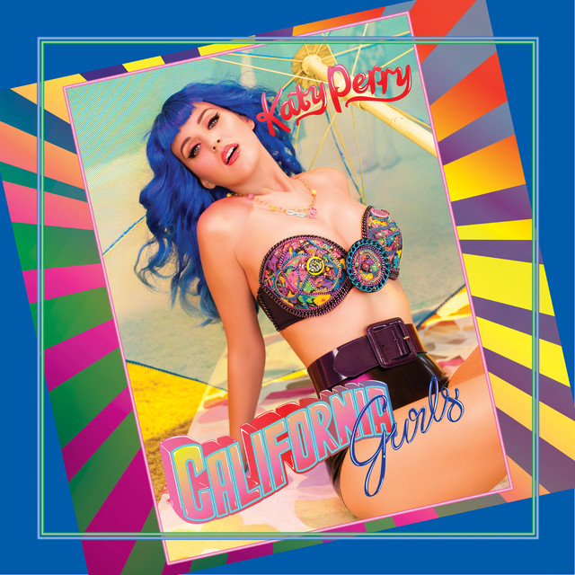

Canciones Destacadas
- Roar
- Firework
- Dark Horse
- Teenage Dream
- California Gurls 
143 es el próximo séptimo álbum de estudio de la cantante y compositora estadounidense Katy Perry. Su lanzamiento está previsto para el 20 de septiembre de 2024, a través de Capitol Records.